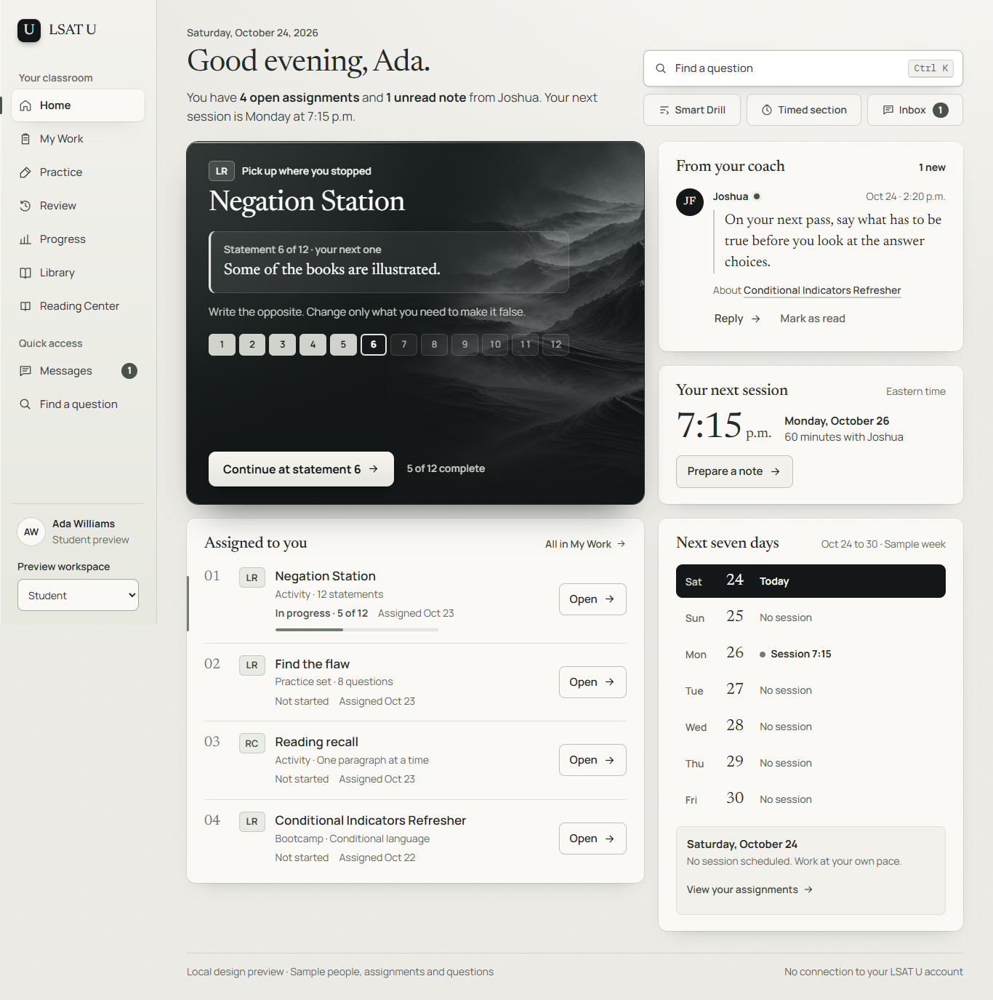
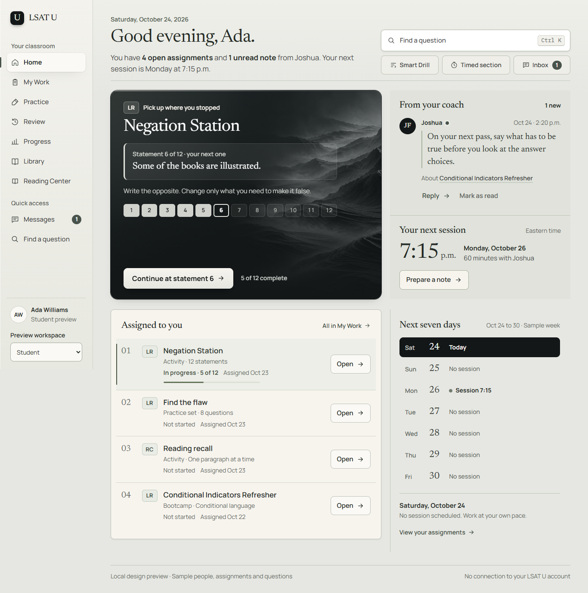

Before
Repeated pale, rounded, elevated panels.

2026-10-26 · Both images are local synthetic previews at1366pixels. Charcoal and off-white throughout. Open an image for readable full size. No production comparison or user visual approval is implied.
Repeated pale, rounded, elevated panels.

Assignment sheet, quiet coach/session rail and frameless calendar.
